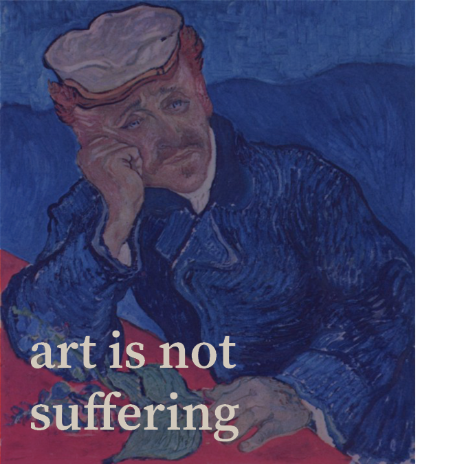

There’s a common misconception that suffering, whether physical or mental, is what prompts exceptional creativity. A popular example is artist Vincent van Gogh’s vibrant artworks are often attributed to his mental illness. However, this is not true. Speculated to have chronic depression, van Gogh often sought treatment for his disorder and wrote frequently to his brother, lamenting how it prevented him from creating better art. In particular, physician Paul-Ferdinand Gachet often treated him for his epilepsy. Van Gogh even painted Gachet holding foxglove, a plant commonly used back then for epilepsy medication. It’s receiving treatment which allowed van Gogh to produce his art. This webpage hopes to offer self-care tips for artists as well.